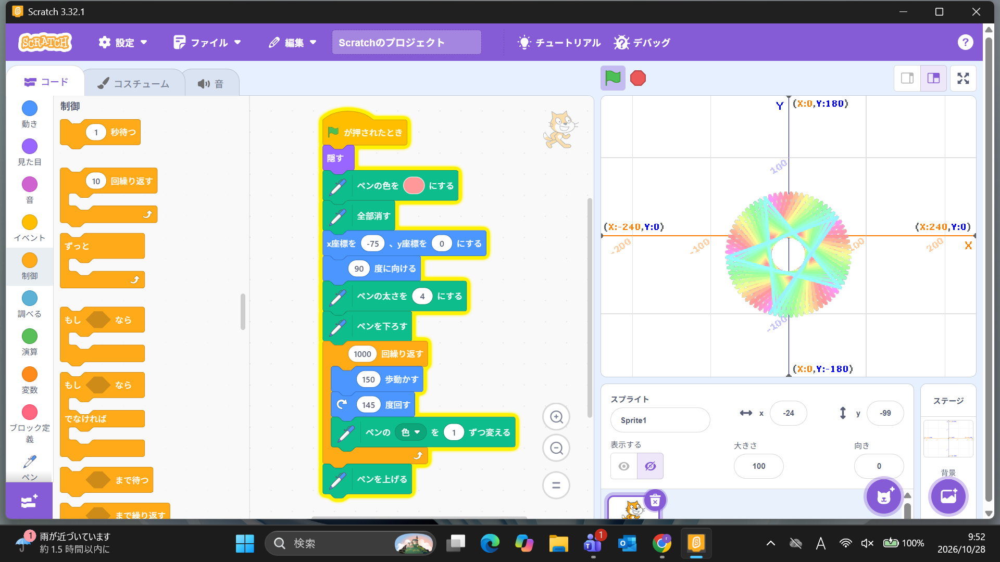

1-1 サイエンスアート

1.内容
学習した内容を説明する文章を
自分で考えて作成する（50文字以上．100文字程度を推奨．※生成AIを使ってはいけない）
Scratch3というプログラミングアプリをつかって作りたいアートを頭で考え、
それをプログラムでつくって実際に形にしてみるという内容だ。
2.感想
学習した内容を実践したときに自分が感じた感想を
自分で考えた文章で作成する（50文字以上．100文字程度を推奨．※生成AIを使ってはいけない）
私は、虹色に光る星が回転しているアートを作ろうと思いプログラムを1回作ってみたら1つの星が色を変えているだけのアートになった。
〇度回すというブロックの角度を少しけてみると作ろうと思っていたものができた。
これらのことからプログラムでつくって実際に形にしてみることは難しいと感じたけれど、
失敗からどこが間違っていたのかを考え工夫することが大切だと思った。